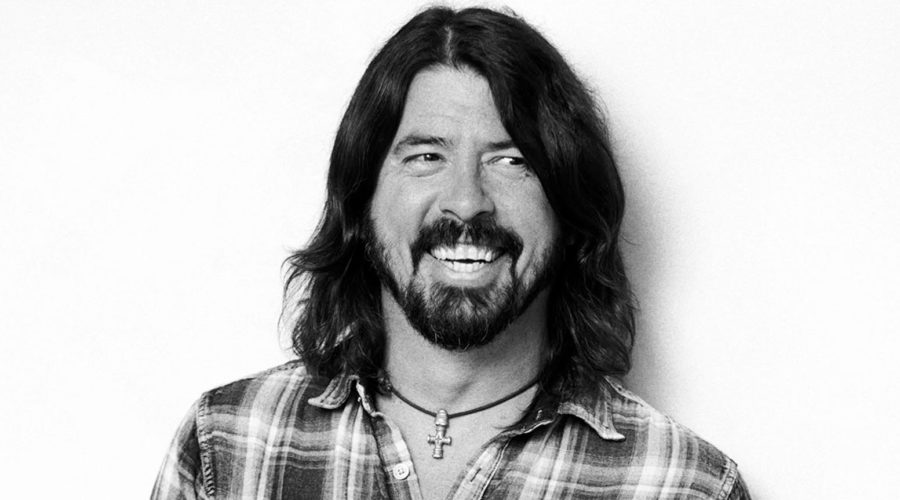

Dave Grohl is an American musician famous for his talent as the drummer of Nirvana and later the lead songwriter, vocalist, and guitarist of Foo Fighters. His poem Ill Stick Around was written solely by himself in 1995 and later was produced as one of twelve songs on the first self titled Foo Fighters album. Grohl is still one of the lead writers and vocalists of his band today with their latest album Concrete and Gold releasing in 2017.
 To the index